Each Prospector Lite 5.0.0 setting, page by page: what it does mechanically, its default, and which symptom tells you to raise or lower it. The Cycle page's 54 loop knobs open the reference; mode pages, tracking, alerts, advanced features, keybinds, app settings, and the quick presets follow. Calibrated pixels and regions are documented separately on the Calibration page.
How to read this reference
Each setting gets one card. The heading is the label as the app shows it; beside it sit the control type, the config key in CAPS, and the shipped default, which is the value the "Reset defaults" chip returns you to. The body states what the key does mechanically, the paired "Raise it when / Lower it when" notes map symptoms to a direction, and the meta line links related settings and names the symptom to watch for. Ranges quoted on Cycle cards are the slider's bounds; a "Coach range" elsewhere is the known-safe range the in-app Coach clamps its own proposals into.
Controls come in four types. A toggle switches a behavior on or off. Whole-number keys (a slider paired with a number box on the Cycle page, plain int fields elsewhere) take milliseconds, seconds, counts, or percentages; the unit is in the label. A few text fields take a word or a URL, and a few float keys take a fraction. Config keys are the stable names: the quick presets list them, and the Cycle timeline's hover shows them as KEY = value lines.
The app's ownership card puts the rule in one line: "Every setting has one owner, so the two macro modes never trample each other." Classic keys tune the built-in cycle and are ignored while a Studio script runs; Studio keys travel with the script library; Shared keys, such as notifications, auto-stop, earnings tracking, and keybinds, apply to any run. The sections below name the owner where it matters, and the ownership card with its three reset buttons is covered under App settings.
Inside the app, the "Search settings…" box above the sidebar nav filters as you type and matches both page names and individual setting labels, so you can jump to a setting without knowing which page owns it. One scope note: calibrated pixels, regions, and colors are not settings and do not appear on this page; they are covered on Calibration.
The Cycle page is where all of the engine's loop tuning lives. Instead of a stack of tabs, the page draws the loop you actually run: a LAND to WATER to LAND diagram with five clickable stage nodes, each showing a live number pulled from your current values (the dig node shows the hold and dig cap, the shake node the click cadence, and so on). The page hint puts it plainly: "This IS your pan loop. Click any stage in the diagram to jump to its knobs; the numbers on the diagram are live. Safety nets sit below the loop." Below the diagram, the Cycle timeline graph models one full pan from your settings. Each bar is one segment of the cycle; the solid part is the best estimate, the hatched tail is the engine's hard budget for that segment, and a red dashed marker shows where shake-failed detection would bail. Hovering a bar lists the settings behind it as KEY = value lines, and clicking a bar jumps to that setting's row. The totals line reports the estimated cycle time, the worst-case budget, and the resulting pans per hour.
Every whole-number setting renders as a slider paired with a number box. Slider bounds come from the Coach's known-safe ranges, the same table the Coach clamps its own proposals into, so the ends of a slider are values the app considers reasonable rather than arbitrary limits. Five "plain-language" Easy tuning settings are additive overlays: at config load each one adds on top of the underlying timings instead of replacing them, and each sits in the stage it affects (they are marked in the cards below). Changes save immediately, are captured by builds, and support Ctrl+Z / Ctrl+Y undo; the engine reads its configuration when a run starts, so a live run keeps what it started with. The one exception is the Safety nets thresholds, which are also read at use-time so an active recovery program can adjust them mid-run.
54 settingsacross 6 stages plus a catch-all
45 slidersbounds from the Coach's ranges
8 togglesplus 1 number box (a fraction)
Applies at next starta live run keeps its values
The Cycle page: clickable loop diagram on top, the Cycle timeline model beneath, stage cards below.
After a run of at least 5 pans, the page analyzes per-pan rates and marks struggling stages with a yellow badge: frequent nudges flag Land & prove, frequent missed shakes flag Glide & start, and frequent recoveries flag Safety nets. The yellow banner above the diagram names the numbers; clicking it opens the Warnings drawer. The same banner also carries calibration health messages. See Troubleshooting and FAQ.
Dig
12 settings
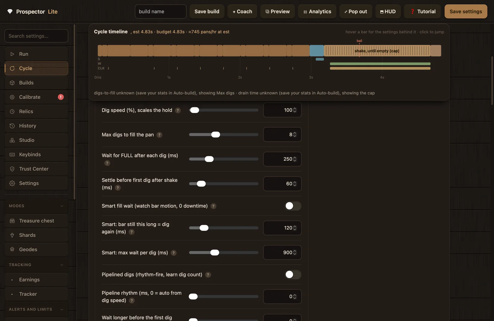
The Dig card: "On land, pan empty: hold the click, fill the pan."
The Dig stage covers filling the pan: how each dig is held, how many digs one pan gets, and how the engine decides a dig has finished registering before firing the next one. The fixed-wait knobs and the smart fill watcher are alternatives; most of the guidance below points at smart fill as the better fix for wasted wait time.
Perfect dig (release on green), off = timed hold
toggle · PERFECTdefault: off
Off, each dig is a timed hold: press, wait the Dig hold length, release. On, the engine holds the button and polls the calibrated green trigger pixel, releasing when the skill bar reaches its green zone (with an overall cap and an optional release delay). The engine's own note is that on this build the bar sweep is often too fast to catch by pixel, so the timed hold usually lands on green more reliably; most builds should leave this off. Requires the Green dig pixel from Calibration.
Turn it on when you have the Green dig pixel calibrated and run a build where the bar moves slowly enough to catch by timing.
Turn it off when digs miss at high dig speed; the timed hold is steadier there.
Related:Dig hold length, Dig speed. Watch for: digs that miss at high dig speed with the toggle on.
Dig hold length (ms)
slider · DIG_CLICK_MSdefault: 75 ms
The core dig knob: how long each dig holds the mouse down when Perfect dig is off. The UI auto-fills it from Dig speed (hold = 55000 / speed), so set it by hand only for odd builds. Its value shows live under the dig node on the loop diagram. Slider 5 to 600 ms, step 10.
Raise it when digs are not registering.
Lower it when every dig lands and you want the time back.
Related:Dig speed, Perfect dig. Watch for: missed digs (too low) or wasted hold time (too high).
Dig speed (%), scales the hold
slider · DIG_SPEEDdefault: 100
Your in-game dig speed stat as a percent. The app derives the hold from it (hold = 55000 / speed, so 100 percent gives 550 ms and 200 percent gives 275 ms) and derives the dig animation rhythm from it (190000 / speed) for the pipeline gap, probe rounds, and the timeline model. The engine acts on the derived hold, so nothing is scaled twice. Slider 10 to 4000, step 25.
Raise it when your in-game stat panel shows a higher dig speed (new gear); the hold and rhythm then take care of themselves.
Lower it when you switch to slower gear. Keep it equal to the stat panel either way.
Related:Dig hold length, Pipeline rhythm. Watch for: digs missing or doubling because the hold no longer matches your stat.
Max digs to fill the pan
slider · MAX_DIGS_TO_FILLdefault: 8
The dig budget per pan. The engine watches the capacity bar and stops the moment it reads full; this only caps how many digs it will try. With Auto-build stats saved, the timeline shows the modeled digs-to-fill clamped to this cap; without them it shows the cap and notes "digs-to-fill unknown (save your stats in Auto-build), showing Max digs". Slider 1 to 20, step 1.
Raise it when it gives up before the pan is full on a multi-dig build.
Lower it when you want a tighter cap that fails faster when something is wrong; 1-dig builds set it to 1.
How long to wait for the capacity bar to read FULL after each dig when Smart fill wait is off. The fill bar animates, so waiting too little re-digs mid-animation and wastes a dig. Smart fill wait handles this automatically and is the better fix. Slider 40 to 800 ms, step 40.
Raise it when it re-digs while the bar is still rising.
Lower it when pans stall too long between digs.
Related:Smart fill wait. Watch for: digs wasted into a still-rising bar.
Settle before first dig after shake (ms)
slider · PRE_DIG_SETTLE_MSdefault: 60 ms
A short pause after landing before the first dig of a pan, so the dig does not fire mid-glide and miss. It runs once per pan; Wait longer before the first dig adds on top at config load. Slider 0 to 600 ms, step 40.
Raise it when the first dig after a shake often does not register.
Lower it when first digs land reliably; keep it small since it adds to each pan.
Watch the bar, not the clock. It keeps waiting while the fill bar is still rising, returns the instant the bar reads full, and digs again the moment the bar sits still short of full. The app's guidance: good for any build, since it removes the dead time a fixed wait leaves.
Turn it on when you want the dead time between digs gone; it fixes re-digs mid-animation and wasted wait after short digs.
Smart fill's re-dig trigger: how long the bar must sit unchanged, below full, before that dig is judged not enough and another dig fires. Slider 60 to 400 ms, step 20.
Raise it when it re-digs while the fill is still climbing.
Smart fill's hard cap: the longest it waits on one dig before moving on, a safety net for a misbehaving bar. Keep it comfortably above your bar's normal fill animation. Slider 300 to 2000 ms, step 100.
Raise it when your bar's normal fill animation runs close to the cap.
Lower it when you want a misbehaving bar abandoned sooner; a normal fill ends well before the cap.
Related:Smart fill wait. Watch for: smart waits cut off with the bar still rising (cap too low).
Pipelined digs (rhythm-fire, learn dig count)
toggle · DIG_PIPELINEdefault: off
Rhythm-fire digs for multi-dig builds. The first 3 fills run normally while the engine learns how many digs fill your pan; after that it fires the follow-up digs on your dig animation rhythm and checks the bar only after the last one. If a fill comes up short it falls back and relearns. The app's note: unreliable on lag.
Turn it on when a multi-dig build is chasing maximum speed on a stable connection; it removes the dead time between digs.
Turn it off when lag or dropped inputs make the learned count unreliable and fills keep coming up short.
slider · EASY_FIRST_DIG_DELAY_MSdefault: 0 (no change)
An Easy tuning overlay: wait this much longer before the first dig after a shake, so you are settled on land before digging. At config load it adds onto both Settle before first dig after shake and Settle after pan empties; the timeline model mirrors the sums. Slider 0 to 1200 ms, step 80.
Raise it when the first dig of a pan often misses because you are still moving.
Lower it when first digs land; return toward 0 since it adds to each pan.
The Walk back card: "Pan full: hold S until the Pan cue shows."
Once the pan is full, the engine holds S toward the water and stops the instant the calibrated Pan cue appears. These four settings shape that walk: the cap on a missed cue, how much deeper to go past the cue, and two Easy tuning overlays.
Max S walk-back (ms)
slider · PAN_BACK_MAX_MSdefault: 200 ms
The walk-back cap. The walk normally stops the instant the Pan cue shows; this only keeps it from reversing forever if the cue never appears. After consecutive failures to reach water the engine grows the budget adaptively, up to 5 times this value, and resets it once water is reached. Go further back into the water adds on top at config load. Its value shows on the diagram's "S walk back" node, and the timeline draws it as "S walk to the Pan cue" with the note "budget, the cue usually fires sooner". Slider 60 to 1200 ms, step 60.
Raise it when your spot needs a long walk to reach water.
Lower it when the cue fires quickly on your spot and a runaway reverse should be caught sooner.
Keeps holding S this long after the Pan cue shows, walking you deeper into the water before the shake. With SMART_TIMING on (Advanced tuning page), the engine bumps it automatically when the shake-miss rate runs high. Go further back into the water adds on top. The app's note: if you land IN the water after shakes, the fix is Walk forward before shaking, not this. Slider 0 to 1200 ms, step 80.
Raise it when the shake starts right at the edge and clips the shore.
Lower it when you are wasting walk time in deep water.
An Easy tuning overlay: go this much further back into the water before shaking. At config load it quietly adds onto both Max S walk-back and Extra S after Pan cue / go deeper. Slider 0 to 1500 ms, step 80.
Raise it when you stop short of deep enough water and the shake clips the shore.
Lower it when you overshoot and waste time walking back out.
slider · EASY_WATER_RETURN_DELAY_MSdefault: 0 (no change)
An Easy tuning setting: pause this long after the pan fills before heading back to the water. Unlike the other Easy keys, this is a real sleep of its own rather than an overlay on another timing. Most builds leave it at 0. Slider 0 to 2000 ms, step 100.
Raise it when the fill animation needs a beat to finish before you turn around.
Lower it when the turn is clean anyway; it delays each pan.
Related:Wait for FULL after each dig. Watch for: turning toward water while the fill animation is still finishing.
Glide & start
8 settings
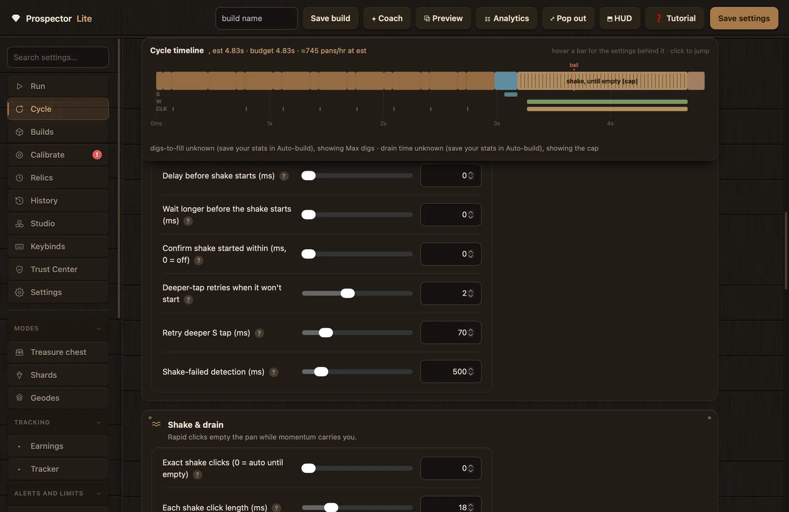
The Glide & start card: "Hold W, build speed toward land, click RIGHT before the edge."
This stage governs how the shake begins: the W glide that builds momentum, when the first click fires, and what happens when a shake fails to start. Several of these keys originate in the schema's "Shake" section; the Cycle page groups by stage, not by original tab, so they render here where they act. Landing in the water after shakes is almost always tuned here, not in the Land stage.
Hold W during shake (glide onto land)
toggle · SHAKE_MOMENTUM_Wdefault: on
The heart of the loop. W is held through the whole shake so built-up speed carries you from the water onto land while the pan drains; W is released the moment the Collect Deposit cue shows land, while the clicking continues. With it off, the diagram's glide node reads "W off!" and the timeline notes "Hold W during shake is OFF, no momentum, no glide".
Keep it on for every normal build; it is what fixes being stranded in the water when the pan empties.
Turning it off removes the glide entirely, so nothing carries you to land and the loop leans on recovery instead. No standard build wants this.
The momentum pre-roll: W is held this long before the first shake click, so built-up speed carries you onto land while the pan drains. The glide is deliberate clockwork with no screen reads or early exits, and the HUD phase flips to "glide" while it runs. Needs Hold W during shake on. Its value shows on the diagram's glide node. Slider 0 to 1200 ms, step 25.
Raise it when you keep landing in the water after shakes; the shake is starting too early, and the app calls this the number one cause.
Lower it when the shake click lands on the shore instead (start retries showing up in the trace).
A pause at the top of the shake, after reaching the water. It works together with Walk forward before shaking: both delay the first click so momentum can build. Wait longer before the shake starts adds on top at config load. Slider 0 to 1000 ms, step 50.
Raise it when the shake fires the instant you touch water and you fall short of land.
Lower it when landings are reliable and the pause is pure overhead.
slider · EASY_SHAKE_DELAY_MSdefault: 0 (no change)
An Easy tuning overlay: wait this much longer before the shake begins, giving momentum time to build or the animation a beat to be ready. At config load it adds onto Delay before shake starts. Slider 0 to 1200 ms, step 60.
Raise it when the shake fires before you are set.
Lower it when shakes start cleanly; return toward 0.
The fast save, opt-in. If the pan is still completely full this long after clicking starts, the shake never initiated; instead of losing the cycle, the engine drops W, taps S deeper (see Retry deeper S tap), re-holds W, resets its confirm and bail windows, and extends the shake budget by at least 0.6 s. Each attempt counts as a shake retry in stats. The check disarms itself once the bar starts draining or the Shake cue shows. Slider 0 to 1500 ms, step 50.
Set it (try 300) when edge clicks occasionally fail to start the shake.
Keep it at 0 when shakes start reliably; and always keep it below Shake-failed detection.
How many deeper-tap retries one shake gets before giving up and letting the normal bail handle it. Each retry taps S a little deeper and tries again. Only active when Confirm shake started within is above 0. Slider 0 to 5, step 1.
Raise it when shakes often need a couple of tries on your spot.
Lower it when you want a dead shake handed to the bail sooner.
The length of the S tap on each shake-start retry; W is dropped around the tap. A bigger tap walks you deeper into the water before trying again. Slider 20 to 300 ms, step 10.
Raise it when retries still start on the shore.
Lower it when retries carry you further from land than they need to.
Related:Deeper-tap retries. Watch for: retry clicks that keep landing on the shore.
Shake-failed detection (ms)
slider · SHAKE_BAIL_MSdefault: 500 ms
The capacity-based bail, auto mode only: if the pan is STILL completely full after this long, the shake never started, so the attempt is abandoned instead of clicking at nothing. The failure counts as a shake fail and posts an event with a reason such as "shake never started (glitch)", "shake stalled mid-drain (game dropped it)", or "shake ran but pan didn't empty". Geode mode substitutes its own hold time for the bail. The timeline draws this as the red dashed "bail" marker. Slider 200 to 2500 ms, step 150.
Raise it when real shakes need longer before the drain shows.
Lower it when you want dead shakes detected sooner.
The Shake & drain card: "Rapid clicks empty the pan while momentum carries you."
The engine's shake is a rapid click stream, not a held press. The engine's own docstring explains why: macOS does not sustain a synthetic held press in Roblox, so a hold silently does nothing, while clicks do register. The stream stops when the capacity bar reads empty; as the same docstring puts it, "capacity is the truth; the Shake cue sticks". These five settings shape the stream and its limits.
Exact shake clicks (0 = auto until empty)
slider · SHAKE_CLICKSdefault: 0 (auto)
At 0, auto mode: shake until the bar reads empty. Above 0, fixed mode: do this many clicks, then stop and read whether the pan emptied. Fixed mode disables the empty-check early stop, the drain-stall detector, the start-confirm retry, and the capacity bail. On the timeline, fixed mode shows one bar named "shake, exactly N clicks" whose length is N times the click length plus gap; auto mode shows "shake, drain (est. from your stats)" or "shake, until empty (cap)". Slider 0 to 30, step 1.
Set a count when an extra auto-click bleeds into the next dig and ruins perfect digs; use the number your build needs.
Each click's hold time in the rattle. Click cadence is click length plus gap; the timeline draws individual click tick marks at that cadence, and the same cadence is reused by the break-out click-to-empty and recovery paths. Shown on the diagram's shake node together with the gap. Slider 8 to 60 ms, step 4.
Raise it when shakes register weakly and the pan drains slower than it should.
Lower it when each click lands and you want a faster rattle.
The auto-mode time limit for the whole shake. The shake stops early the instant the pan reads empty, so this only matters as a cap. Each start-confirm retry extends it by at least 0.6 s, and Geode mode substitutes its own hold time. On the timeline this is the hatched end of the auto shake bar; the solid part is the drain estimate from saved Auto-build stats when available (otherwise the note "drain time unknown (save your stats in Auto-build), showing the cap" appears). Slider 400 to 4000 ms, step 200.
Raise it when slow-shake gear gets cut off with capacity still showing.
Lower it when you want a tighter cap that fails faster on a broken shake.
The mid-drain freeze detector, opt-in and auto mode only. If a started shake's bar stops falling for this long, the game dropped the shake; the attempt ends now instead of clicking out the timeout, and it counts as a shake fail. Geode mode multiplies the threshold by 4. The app's note: keep it well above one drain tick so slow builds cannot false-trigger. Slider 0 to 3000 ms, step 100.
Raise it when a slow build's normal drain pauses trip it and produce false shake fails.
Set it (try 600) when dropped shakes are wasting whole timeouts and you want them caught mid-drain.
The Land & prove card: "Slide onto land as it empties; settle, then prove the dig registered."
After the pan empties, momentum should put you on land. This stage settles the landing, confirms the Collect Deposit cue, then proves the ground is diggable: a probe dig, a wait for the capacity bar to move, and a forward nudge if it did not. If this stage works hard on each pan, the usual root cause is landing short, which is fixed in Glide & start, not here.
Settle after pan empties (ms)
slider · POST_SHAKE_SETTLE_MSdefault: 150 ms
The landing settle: a pause after the pan reads empty so momentum can put you on land before the dig-probe runs; the HUD phase shows "settle". Wait longer before the first dig adds on top at config load. Its value shows live on the diagram's land node. Slider 0 to 800 ms, step 40.
Raise it when the first probe fires while you are still sliding and misses.
Lower it when landings are clean; it adds dead time to each pan.
The land hunt cap: after a shake, the engine holds W and waits up to this long for the Collect Deposit cue; it deliberately never brakes with S. The app's note: this is a safety net for a short landing, not the cure; the cure is momentum. Go further onto land adds on top at config load. Slider 400 to 3000 ms, step 200.
Raise it when wide beaches need a longer hunt.
Lower it when you would rather give up faster and let probing handle it.
Keeps holding W this long after the land cue shows, so you sit firmly on the dirt instead of flickering between land and water while the cue blinks off again. With SMART_TIMING on, the engine bumps it automatically when the land-miss rate runs high. Go further onto land adds on top. Slider 0 to 400 ms, step 25.
Raise it when the Collect Deposit cue flickers right after you arrive.
Lower it when arrivals are stable; keep it small since it runs on each pan.
Probe from the dirt, not blind. Before the first probe dig, if the Collect Deposit cue is not on screen yet, the engine pulses W in jittered taps (not a blind hold) until the cue shows, up to the assist budget. The app's note: this tidies up AFTER the shake; if you land in the water, fix Walk forward before shaking first.
Turn it on when short landings cost you wasted nudges after every shake.
Leave it off when landings already put the cue on screen; the assist has nothing to do then.
How long Land assist may pulse W waiting for the cue before the normal probe takes over. The app's note: it is a helper, not a walk. Slider 100 to 1500 ms, step 50.
Raise it when the cue tends to appear a beat late on your spot.
Lower it when the cue shows fast; keep the budget short.
Related:Land assist. Watch for: the assist burning its budget on most pans (fix the landing instead).
Wait to detect a probe-dig hit (ms)
slider · DIG_PROBE_MSdefault: 320 ms
Probe patience: after a probe dig, how long to wait for the capacity bar to move before calling it a miss and nudging forward. The timeline's "prove rise" bar comes from this value. Slider 120 to 900 ms, step 60.
Raise it when good probes are counted as misses, causing needless nudges.
Lower it when you want real misses detected sooner.
The hunt step: how far forward to nudge between probe digs while looking for diggable ground. Go further onto land adds on top at config load. Slider 30 to 400 ms, step 30.
Raise it when bigger steps would search a wide beach faster.
Lower it when big steps overshoot the dig strip; small steps cannot.
The give-up count: how many nudge-and-probe rounds before the engine concludes it cannot find land. Exhaustion logs "no land after N rounds" and escalates toward a safe stop. The app's note: if this trips a lot, the real cause is landing short; fix Walk forward before shaking. Slider 2 to 12, step 1.
Raise it when wide beaches need more hunting.
Lower it when you want it to fail faster when something is truly wrong.
An Easy tuning overlay: go this much further onto land after a shake. At config load it adds onto Hold W after land cue, Forward W nudge between probe digs, and Max W to find land cue. The app's note: if you land fully IN the water, fix the momentum first (Walk forward before shaking), not this. Slider 0 to 1500 ms, step 80.
Raise it when you land a touch short and need nudges to reach diggable ground.
Lower it when landings reach the dig strip; return toward 0.
These fourteen settings merge the schema's "Recovery / safety" and "Recovery movement (jitter taps)" sections. Together they form an escalation ladder: a stuck detector watches for repeating screens, gentle pulsed nudges try to wiggle you free, a stuck shake gets re-attempted, and a break-out (finish the shake with clicks, then reposition) escapes what nudges cannot. Two fast paths sit alongside the ladder: a shake-glitch counter and a no-progress watchdog, both of which force a click-to-empty and eventually a safe stop. Unlike the rest of the page, these thresholds are also read at use-time, so an active recovery program can adjust or disable individual rungs mid-run.
Enable stuck-recovery
toggle · RECOVER_ENABLEDdefault: on
Gates the nudge rung of the ladder: small pulsed movements that wiggle you free when the same screen keeps repeating. Without it, a single wedge idles the run until the safe stop.
Keep it on; it is what fixes being stuck against a rock forever.
Turn it off only when you want a wedge to go straight to the safe stop with no wiggle attempt.
Gates the break-out: finish a stuck shake with a click burst, then reposition with a forward W hold, which frees a wedge that nudges cannot. It also gates both fast paths; with it off, the shake-glitch path safe-stops instead of breaking out, and the no-progress watchdog is inert.
Keep it on so recovery has a real escape hatch.
Turn it off only when the reposition move itself causes problems on your spot and you accept safe stops instead.
The stuck detector: this many identical screen reads in a row (the watchdog compares a location-plus-contents signature each tick) counts as stuck and starts the recovery ladder. Slider 2 to 12, step 1.
Raise it when slow builds false-trigger recovery mid-animation.
Lower it when you want real wedges reacted to faster.
The movement budget per corrective nudge, spent as pulsed taps: S taps toward the Pan cue when stuck full on land, W taps toward a full-capacity read when empty and unable to land. The pulse shape comes from Tap hold per pulse and Tap release per pulse. Slider 60 to 600 ms, step 40.
A legacy knob on the current engine. It was the original shake give-up line: failed shakes tolerated before a safe stop. The setting still renders, saves into builds, and the Coach clamps it, but no live execution path reads it in 5.0.0; the engine's plan layer documents it as superseded by Failed shakes before quick click-to-empty, and the safe stop for repeated shake failures now fires from that path once break-outs are exhausted (stopping with "shake not emptying after N tries"). Slider 2 to 15, step 1.
Raising it changes nothing at runtime; the current engine does not read the value.
The quick fix trigger: after this many failed shakes the engine immediately runs a click-to-empty break-out, which usually clears a shake glitch cheaply. It needs Enable break-out and remaining break-out attempts; once those are exhausted it safe-stops with "shake not emptying after N tries". 0 disables this fast path. Slider 0 to 10, step 1.
Raise it when occasional shake fails clear on their own and you want fewer interventions.
Lower it when you want the glitch reacted to faster.
The watchdog, and the only time knob on this page measured in seconds rather than milliseconds. If nothing completes for this long (no pan emptied, no dig registered), it forces a click-to-empty to shake the state loose; once break-out attempts run out it safe-stops with "no progress -- stuck (shake glitch?)". 0 turns it off, and it also needs Enable break-out. Slider 0 to 60 s, step 2.
Raise it when genuinely slow cycles are being interrupted.
Lower it when you want faster reaction to a loop that is silently wedged.
Break-out patience: attempts before it gives up and safe-stops. The app's reasoning: if repositioning twice did not free it, something real is wrong and pausing is safer. A successful break-out (the pan emptied) resets the counter. Slider 1 to 8, step 1.
Raise it when your spot legitimately needs several tries.
Lower it when you would rather have the run stop and alert you than keep repositioning.
During a break-out with a full pan, click for up to this long (at the normal shake click cadence) to complete a shake that is locking your movement, so the reposition can actually move you. It returns early if the pan empties. Slider 200 to 1500 ms, step 100.
Raise it when break-outs are not freeing you because the shake still locks movement.
Lower it when the burst spends longer clicking than your pan needs; it ends early on an empty pan anyway.
The on half of a recovery jitter tap: how long each pulse holds the key. Used only while recovering (and by Land assist), never in the normal loop. The pulse helper re-checks the target cue after each tap, so there are no long blind key holds that could sail past the target. Slider 5 to 40 ms, step 3.
Raise it when taps are too weak to wiggle you free.
Lower it when the wiggle is stronger than your spot needs.
The off half of the pulse: how long each tap releases before the next check. The on/off alternation is what does the wiggling. Slider 1 to 20 ms, step 2.
Raise it when the jitter is too violent for your spot.
Lower it when you want the pulses tighter together.
The "Other tuning" card is generated automatically for any moved key no stage claims; its tagline reads "Settings the stages didn't claim (nothing is ever dropped)." With the current stage tables it holds a single key, which originates in the schema's "Shake" section.
Pan-empty threshold (lower = wait emptier)
number · CAP_EMPTY_FRACdefault: 0.04
The definition of "pan empty" everywhere in the engine: the pan counts as empty when the capacity bar's fill fraction is below this value (0.04 means 4 percent of the bar left). The shake's auto-stop check reads it on each click, and Geode mode halves it. This is the page's only float, so it renders as a plain number box (step 0.005, minimum 0) with no slider. The app's tip: if it empties too early every time, re-calibrate the bar's LEFT end in Calibration; that is the real fix.
Raise it when it keeps rattling an already-empty pan.
Lower it when shakes end with dirt still in the pan; try 0.02.
All 54 Cycle settings are Classic-owned and are captured in full by builds. The sidebar's quick presets rewrite some of them (for example "v1 · fast 1-dig" sets a 15 ms hold with a 1-dig cap, and "v2 · multi-dig" restores the 75 ms hold with an 8-dig cap); preset changes are undoable with Ctrl+Z.
Mode sections
The Modes group in the app sidebar holds three pages: Treasure chest, Shards, and Geodes. Each one replaces the standard dig with a pattern built for one kind of farm, while the rest of the cycle keeps its normal tuning. Which mode suits which build, and how to pick a spot, is covered on Modes and builds; this section documents what each key does mechanically. All three pages are Classic-owned: they tune the built-in cycle and are ignored while a Studio script runs.
When more than one mode is switched on, the engine resolves the conflict by a fixed precedence order rather than a lockout:
1. Trackerwins over everything while enabled
2. Studio scriptan active script supersedes the mode toggles
3. Treasurebeats the normal cycle when on
4. Normal cycleruns when nothing above claims the run
Run one mode at a time. The in-app help repeats it for each page: turn Shards and Geodes off before enabling Treasure, and turn Shards and Treasure off before enabling Geode mode. Shards mode has no toggle of its own; it is active whenever Exact dig clicks (0 = off) is above 0.
Treasure chest
5 settings
The page hint describes the mode in one breath: "A no-shake mode for farming the two spots at Rubble Creek: stand on the deposit, it digs, strafes across to the sands, digs, then strafes back, over and over. Calibrate the Deposit pixel on the Collect prompt."
Mechanically, one Treasure pass releases all held keys, performs at least one dig (the digs count is floored at 1), sleeps the dig gap after each click, then strafes sideways, alternating D and A on each leg, until the Collect/Deposit cue reappears. The strafe cap is applied twice per leg: once while waiting for the pan cue and once for the deposit cue. Navigation depends entirely on the Deposit pixel from the Calibrate tab, so calibrate that on the Collect prompt before starting.
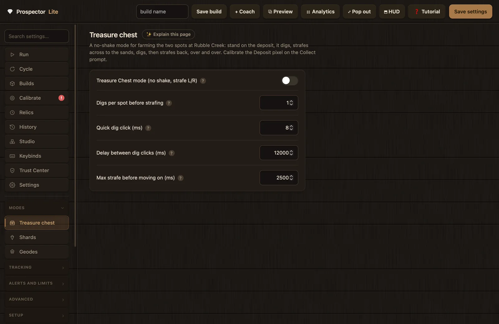
The Treasure chest page. Five keys cover the whole mode.
Treasure Chest mode (no shake, strafe L/R)
TREASURE_MODE · toggledefault: off
The master switch for the Rubble Creek two-step. While on, the shake loop is skipped entirely; the macro digs, strafes to the other spot, digs there, and strafes back.
Turn on when you farm the two-spot deposit at Rubble Creek, where the shake loop does nothing useful.
Leave off when you farm anywhere else. Switch Shards and Geodes off before enabling it.
The wait between dig clicks while the slow chest-style animation plays out, so clicks do not stack. This is a hard sleep per dig, so it directly sets the pace of the whole loop.
Raise it when digs overlap on slow gear; about 12000 ms is a good start.
Lower it when fast gear wastes time waiting between clicks.
Related:Digs per spot before strafing. Coach range: 1000 to 30000 ms. Watch for: pans per hour dropping after a raise; that is this sleep, working as intended.
Max strafe before moving on (ms)
TREASURE_MOVE_MAX_MS · intdefault: 2500 ms
The strafe cap: stop strafing after this long even if the Collect cue never appears, so the macro cannot run sideways forever. The cap is used twice per leg, once per cue wait, so a low value can stop the strafe short of the second spot.
Raise it when the two spots are far apart and the macro gives up before arriving.
Lower it when you want a missed cue to waste less walking.
The page hint: "Exact-click digging for shard farming: a known number of dig clicks (usually ONE), a registration check instead of probe re-digs, and optionally move on the moment the fill starts."
Shards mode clicks the dig a fixed number of times per land visit. Proof that a click registered is the capacity bar leaving EMPTY within the confirm window (the engine floors that window at 30 ms), or, with the green confirm on, the green dig skill-bar appearing frames earlier. Only a provably dead click is retried, so a slow fill animation can never cause a double dig.
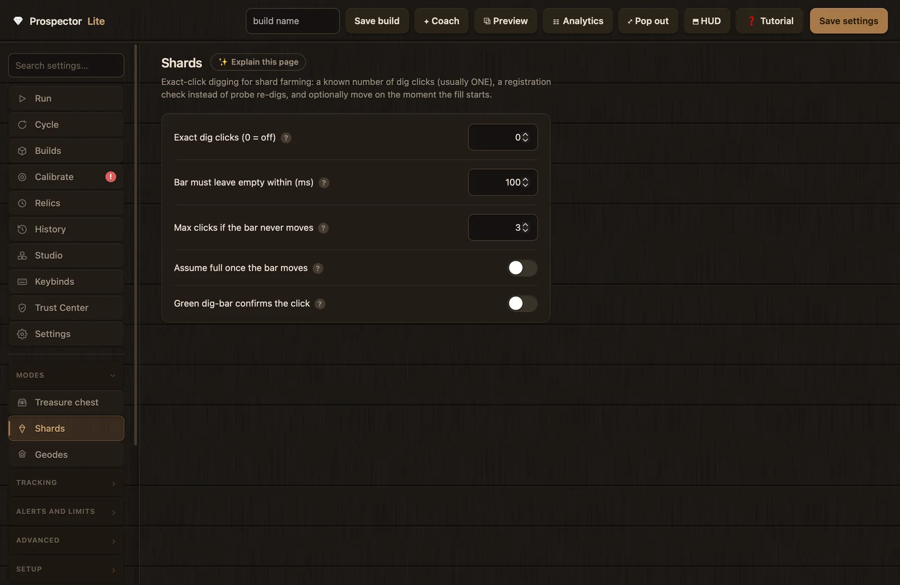
The Shards page. The click count doubles as the mode switch.
Exact dig clicks (0 = off)
SHARDS_DIG_CLICKS · intdefault: 0
The Shards mode master switch. Any value above 0 turns the mode on and clicks the dig that many times per land visit, with no probe re-digs and no double clicks from bar-detection races. At 0 the normal dig logic runs.
Raise it when a fixed number of clicks (often one) fills your pan; it fixes builds that dig 2 to 3 times before the bar moves.
Set 0 when you want the standard dig logic back; this is also what the v1 and v3 presets do.
The proof window per click: the capacity bar must leave empty within this long, or the click is declared dead and retried. The engine floors the window at 30 ms.
Raise it when good clicks are being retried because your bar reacts slowly.
Lower it when you want dead clicks declared, and retried, faster on a snappy build.
Skips the full read. The instant the bar starts filling, the pan is treated as FULL and the walk to water begins during the fill animation. The shake clears the assumption automatically.
Turn on when you run a one-click-fill build; it removes the dead time spent waiting out the fill animation.
Leave off when your build needs more than one click to fill; assuming full early would shake a part-filled pan.
Related:Exact dig clicks. Watch for: shakes on part-filled pans; that means the build is not truly one-click-fill.
Green dig-bar confirms the click
SHARDS_GREEN_CONFIRM · toggledefault: off
Uses the green dig skill-bar popping up as proof the click registered, frames before the capacity bar moves; on very fast builds the capacity bar can lag by 2 to 3 whole animations. Needs the Green dig pixel calibrated on the Calibrate tab; Perfect mode itself can stay off. It auto-disarms for the visit on green terrain.
Turn on when you run a very fast build where the capacity bar lags behind reality.
Leave off when the Green dig pixel is not calibrated, or the capacity-bar proof is already reliable.
Geode shovels fill so slowly that normal logic thinks the dig failed. Geode mode taps the dig, waits out the animation between taps so it will not false-nudge while the fill is still catching up, then runs the normal walk-back and momentum shake rather than Treasure's strafe. The page hint recommends turning on the green dig-bar confirm so a tap that missed nudges straight away instead of costing a whole animation.
Useful engine floors: the tap length is floored at 1 ms, the dig-start window at 120 ms, and the animation delay at 50 ms. The animation wait always ends early the instant the bar moves. In geode mode the shake's hold cap and its bail window both become Max shake time (ms), so a slow shake is never abandoned mid-drain. The v3 · geode preset loads this whole page plus matching shake and dig timings in one click.
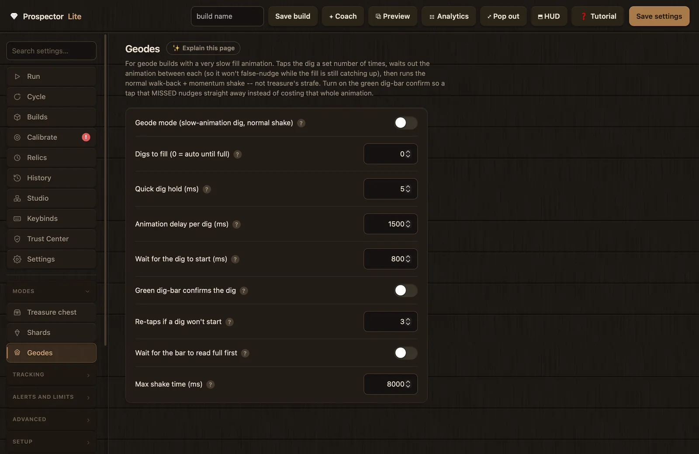
The Geodes page. Nine keys, most of them animation waits.
Geode mode (slow-animation dig, normal shake)
GEODE_MODE · toggledefault: off
Built for very slow fills, such as 10% dig-speed geode shovels. Taps the dig, waits out the animation, then runs the normal walk-back and momentum shake. The HUD shows the animation countdown while it waits.
Turn on when geode gear causes false nudges mid-fill because the normal logic reads the slow fill as a failed dig.
Leave off when your fill animation is normal speed. Switch Shards and Treasure off before enabling it.
How many taps fill the pan on this build, waiting out each slow animation. 0 means auto: keep digging until the bar actually reads full, which the in-app help recommends.
Set a number when the bar reads unreliably on your build and auto never settles.
Keep 0 when the bar reads correctly; auto adapts to gear changes on its own.
The big one: how long to wait for the slow geode fill after each tap before deciding it failed. The wait ends early the moment the bar moves, so a generous value costs little. The v3 preset sets it to 12000 ms for the slowest shovels.
Raise it when you still see false nudges; set it as high as your slowest geode animation, typically 1500 to 3000 ms.
Lower it when your gear fills faster than the wait and a genuinely dead tap should be noticed sooner.
Related:Wait for the dig to start. Watch for: nudges mid-animation mean this is too low, not that the mode is broken.
Wait for the dig to start (ms)
GEODE_START_MS · intdefault: 800 ms
The dig-start proof window: after clicking, how long to wait for the dig to actually start (green bar or capacity movement) before re-clicking. The animation timer only begins once a dig is confirmed running. Floored at 120 ms.
Raise it when your game is laggy to start digs.
Lower it when digs start promptly and you want missed taps re-tried sooner.
The geode version of green-bar proof. Normally a tap that missed still costs the whole animation delay before the macro can tell, so a dig off the edge of the land burns around 12 seconds doing nothing before it nudges. The green dig-bar shows within frames; with this on, a tap with no green is re-tapped immediately, and a used-up re-tap budget nudges straight away. Needs the Green dig pixel calibrated; Perfect mode itself can stay off.
Turn on when you run slow geode gear where one tap fills the pan and a missed tap wastes a whole cycle.
Leave off when the Green dig pixel is not calibrated yet.
Related:Wait for the dig to start, Re-taps if a dig won't start. Watch for: it will not count green that was already showing before the tap; and if a dig ever registers with no green, it disarms itself for the run and asks you to re-calibrate.
Re-taps if a dig won't start
GEODE_START_TRIES · intdefault: 3
The re-tap budget when the green confirm is on: how many taps to try before deciding this spot is not land and nudging forward. Each try costs one Wait for the dig to start. Ignored unless Green dig-bar confirms the dig is on; without that proof a re-tap could double-dig.
Raise it when taps genuinely miss a lot on your build.
Lower it when you want it to give up and nudge faster.
The geode shake cap. The shovel slows the shake too, so this is the maximum time to keep shaking; it still stops the instant the pan is empty. In geode mode this value also replaces the bail window, so the still-full bail is effectively disabled and a slow shake is never abandoned.
Raise it when shakes are cut short with capacity left on slow gear.
Lower it when your shake drains well inside the cap and you want a hard upper bound on a stuck shake.
Related: the Shake stage settings covered earlier on this page. The v3 preset sets this to 10000 ms.
Tracking
The Tracking group holds two pages. Earnings measures what a run produces: money, shards, and a log of finds. Tracker is a separate run mode that watches the game's own Auto Pan and scores it on the same stats as macro runs. Earnings is a Shared page, so it applies to any run: the classic cycle, Studio scripts, and Tracker runs alike. Tracker's keys are Classic-owned.
Earnings
16 settings
Two independent trackers live on this page.
Money and shards OCR reads the HUD totals on a timer and credits the gains to the run: $/hr, $/pan, and shards/hr in the live stats, Analytics and History. Reads run in a background thread every Read the totals every (seconds) (floored at 2 s), and two reads taken 250 ms apart must agree before a value is accepted. Earnings are the difference between consecutive totals, gains only: a drop re-baselines and is treated as spending, not negative income. It needs the Money and Shards regions drawn on the Calibrate tab and confirmed with Test money/shards read.
The finds tracker watches the item pop-up cards and records modifier, name, weight and rarity, feeding the ticker, loot value and Analytics. It runs two layers: a fast pixel sampler with no OCR that counts how many cards are up and how solid each is (floored at 20 ms), and an identity OCR pass at most every Identity OCR at most every (ms) (floored at 60 ms). A pixel counts as card text only when it is bright on all channels and sits within a few pixels of a dark backing pixel; that pairing is what makes the sampler terrain-proof. Kept-loot valuation uses Value finds at/above rarity and Sell boost for loot value (%).
Both trackers read text through the macOS Vision framework, and the in-app help marks them "macOS only". If Vision is unavailable, the engine logs that OCR is unavailable and disables earnings for the run. If tracking is on but the regions are not calibrated, the run log says so and points you at the Calibrate tab.
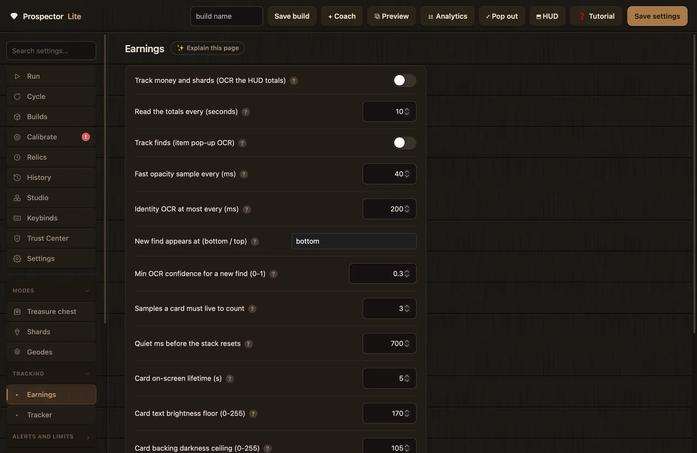
The Earnings page. Two toggles at the top; the rest tunes the finds tracker.
Track money and shards (OCR the HUD totals)
EARN_TRACK · toggledefault: off
Reads the HUD totals and credits the gains to the run: $/hr, $/pan, shards/hr in live stats, Analytics and History, for macro and Tracker runs alike. Gains only; spending mid-run is ignored.
Turn on when you want builds compared on real income, not pans per hour alone.
Leave off when the Money and Shards regions are not drawn yet, or you are not on macOS.
Related:Read the totals every, the Money and Shards regions on the Calibrate tab. Watch for: a dash in the $/hr stat means no money has been seen yet, not a failure.
Read the totals every (seconds)
EARN_OCR_SEC · intdefault: 10 s
How often the totals are read (floored at 2 s). Earnings count as the difference between reads, so nothing is missed in between and accuracy does not change with the interval.
Raise it when you want fewer screen reads; accuracy stays the same.
Lower it when you want the live $/hr to react faster.
Logs finds from the item pop-up cards, recording modifier, name, weight and rarity. Kept items get a value from item prices times your sell boost. Needs the Find pop-up region drawn and confirmed with Test find pop-up read.
Turn on when you want a record of what you dug up and a loot-value estimate beside the money read.
Leave off when the Find region is not calibrated, or you are not on macOS.
The fast pixel sampler's cadence. No OCR: it measures how many cards are up and how solid each one is, and it is what counts arrivals, so burst drops all land. Floored at 20 ms; the stack-reset coast adapts to this value.
Raise it when you want less CPU use; counting gets coarser.
Lower it when very fast back-to-back drops are being missed.
The identity reader's minimum gap between full name, weight and rarity reads. The fast sampler does the counting, so identity can lag safely. Floored at 60 ms.
Raise it when OCR is costing too much CPU.
Lower it when item names show up slowly in the ticker.
Which end of the stack a new find card appears at; the list scrolls the other way as older cards fade. Accepted values are "bottom" and "top".
Set "top" when your game stacks new cards above the older ones.
Keep "bottom" when new cards slide in underneath, which is the default layout.
Watch for: find counts doubled or missed; that is the classic symptom of the wrong stack direction.
Min OCR confidence for a new find (0-1)
FINDS_MIN_CONF · floatdefault: 0.30
The OCR safety-net gate: how confident a text read must be to start a find on its own. The pixel tracker does the main counting; this only gates the backup path.
Raise it when phantom finds appear from misreads.
Lower it when genuine finds occasionally slip through.
Coach range: 0.0 to 1.0 in steps of 0.05. Finds below 0.3 confidence are marked with a dim "?" in the Analytics find log.
Samples a card must live to count
FINDS_MIN_DWELL · intdefault: 3
The flicker filter: how many consecutive fast samples a card must survive before it counts.
Raise it when phantom finds appear from one-frame flicker.
Lower it when very fast cards are being missed; the minimum is 1.
The stack reset timer: how long the finds area must stay quiet before lingering cards are finalized and the stack resets.
Raise it when fast bursts are being merged into one.
Lower it when separate drops are being run together.
Coach range: 200 to 3000 ms.
Card on-screen lifetime (s)
FINDS_CARD_SEC · intdefault: 5 s
How long one card lives on screen, animations included. This sets the re-sighting window: the same name and weight re-detected within this long of vanishing abruptly counts as the same card. Real enchant duplicates coexist on screen, so they still count separately.
Raise it when the game's card lifetime is genuinely longer than 5 seconds.
Lower it when cards vanish faster in your game; otherwise leave it at the real lifetime.
Coach range: 3 to 15 s.
Card text brightness floor (0-255)
FINDS_WHITE_MIN · intdefault: 170
The brightness floor for card text, applied to each RGB channel. Colored tier text is caught too, even though it is not pure white.
The noise floor: the fraction of a pixel row that must read as card text before the row joins a card band. Well tuned by default; the engine clamps a value that would turn all rows into bands and logs a warning.
Raise it when ghost cards appear over busy backgrounds.
Lower it when faint cards are missed.
Coach range: 0.002 to 0.05. Only touch it if counts are clearly off.
Verbose finds tracker diagnostics
FINDS_DEBUG · toggledefault: off
Prints tracker internals into the trace: bands, tracks, stack shifts, ghosts, and inferred finds.
Turn on when your find counts look wrong and you want to see why.
Your sell boost as a percent: 100 = 1x, 250 = 2.5x. It multiplies the estimated value of logged finds so loot value matches what your gear actually sells for. It only affects the loot estimate, never the money read off the HUD.
Raise it when your in-game sell boost is above 1x; match the real number.
Lower it when you drop sell-boost gear and the estimate runs hot.
The kept-loot cutoff. Only finds at or above this rarity are valued as kept loot; anything below it auto-sells and is already in the money counter, so valuing it here would double-count.
Raise it when your Auto-Sell keeps only the higher tiers.
Lower it when you keep lower tiers too; match whatever your Auto-Sell keeps.
Tracker is watch-only benchmarking. The macro sends no input at all: it reads the capacity bar through the same detector the macro uses, counts the game's own Auto Pan, and scores it on the same ruler as macro runs, so you can find out whether your build out-earns the built-in Auto Pan. Bar rise bursts count as digs, drains as shakes, and a drain to empty after a sufficient peak counts one pan. Runs are labeled TRACKER in History, and earnings tracking works during Tracker runs too.
There are three opt-in exceptions to "no input": the Auto Pan guard (re-enables the button if it reads OFF twice in a row), the stall kick (toggles the button off and on when it shows ON but the bar has been dead too long), and relic placement when Use relic timers during Tracker is on. Recovery stays off while Tracker watches. Tracker mode takes precedence over all other modes while enabled.
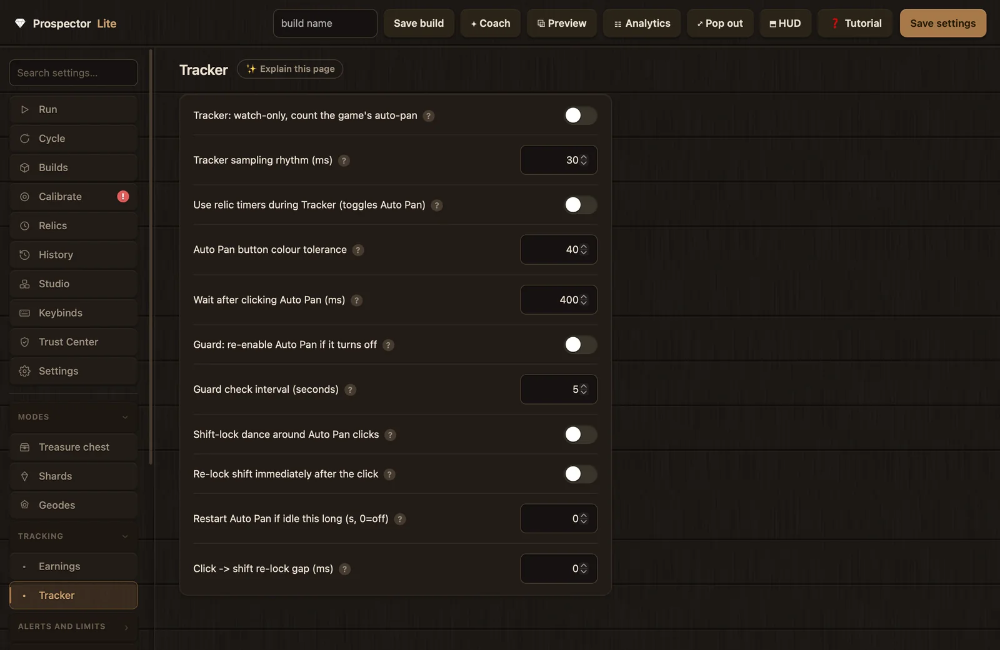
The Tracker page. Most keys here manage clicking the game's Auto Pan button safely.
Tracker: watch-only, count the game's auto-pan
TRACKER_MODE · toggledefault: off
The Tracker master switch. Start the macro with this on, turn on the game's Auto Pan, keep your hands off, and watch the stats accumulate on the same scale as macro runs.
Turn on when you want to benchmark the game's own Auto Pan against your macro builds.
Leave off for normal macro runs; Tracker outranks all other modes while it is on.
Use relic timers during Tracker (toggles Auto Pan)
TRACKER_RELICS · toggledefault: off
Keeps relic timers firing during Tracker runs. The sequence: click Auto Pan off, place the relic, click Auto Pan back on, color-checking the button each time. Needs the Auto Pan button position and both its ON and OFF state colors calibrated.
Turn on when you benchmark long enough that buffs would expire mid-run.
Leave off when the Auto Pan button is not calibrated, or you want a strictly hands-off watch.
How far each color channel may drift from the calibrated ON and OFF colors before the button no longer counts as that state.
Raise it when lighting or effects shift the shade and toggles misread the button.
Lower it when it confuses ON with OFF.
Related:Use relic timers during Tracker. Coach range: 10 to 120. The ON and OFF calibration rows live in the Calibrate tab's "Fortune River recovery (optional, advanced)" section.
Wait after clicking Auto Pan (ms)
AUTOPAN_SETTLE_MS · intdefault: 400 ms
The pause after each Auto Pan click before the color is re-read to confirm the click worked.
Raise it when the toggle animation is slow and clicks double-fire on a laggy game.
Lower it when the toggle responds quickly and you want relic placement over with sooner.
The Auto Pan babysitter. While Tracker runs, it re-reads the button on an interval; if the button reads OFF twice in a row, it clicks it back ON and logs a guard event. Needs the Auto Pan button calibrated.
Turn on for unattended Tracker runs, so an accidental toggle cannot stall hours of benchmarking.
Leave off when you are watching the run yourself and would rather nothing gets clicked.
For shift-lock players only. Before touching the Auto Pan button it taps Shift to free the cursor, clicks, then re-locks, so the click lands instead of spinning your camera.
Turn on when you play with shift-lock on and clicks spin the camera instead of landing.
Leave off when you do not use shift-lock; otherwise it toggles you INTO it.
Re-locks Shift the instant the click is confirmed, instead of parking the cursor at center first. Slightly faster, since the lock snaps the cursor to center anyway.
Turn on when you use the shift-lock dance and want the toggle quicker.
Turn off when clicks land in odd places after a relic toggle.
The idle kick. Auto Pan sometimes wedges while its button still shows green; if the bar shows no activity for this long while the button reads ON, the button is toggled off and back on and a kick event is logged.
Raise it when enabling: set it comfortably above your slowest normal gap; the help suggests 5 to 8 s.
Keep 0 when you do not want the kick at all.
Related:the guard toggle. Watch for: Auto Pan green but nothing happening; that is the wedge this fixes. Coach range: 0 to 60 s.
Click -> shift re-lock gap (ms)
AUTOPAN_RELOCK_DELAY_MS · intdefault: 0 ms
The wait before the Shift tap that re-enters shift-lock, after the cursor is parked (normal path) or right after the verified click (fast re-lock).
Raise it when the re-lock registers too early and eats the click.
Lower it when the re-lock is reliable and you want the sequence tighter.
The Alerts and limits group holds Notifications and Auto-stop. Both are Shared pages: they apply to any run, classic cycle and Studio scripts alike. Between them they cover being told what happened and putting a ceiling on how long a run can go.
Notifications
10 settings
The page hint: "Post run updates to your own Discord webhook on start, stop and stats. Off until you add a webhook URL." Nothing sends while the master toggle is off or the URL field is empty, and the URL is yours: no webhook is baked into the app. Each engine event maps to one toggle:
Event
Fires when
Gated by
start
a session starts (Start button or the start hotkey)
Notify: started
stop, autostop, bag_full
any stop: manual, the auto-stop timer, or the bag-full guard
Notify: stopped (manual / timer / bag full)
stats
on the periodic stats interval
Notify: periodic stats
safe_stop
the macro pauses on trouble and starts retrying
Notify: safe-stop (hit a hazard)
recovery
each recovery-ladder activation
Notify: recoveries (can be frequent)
error
an unexpected error stops the macro
Notify: errors
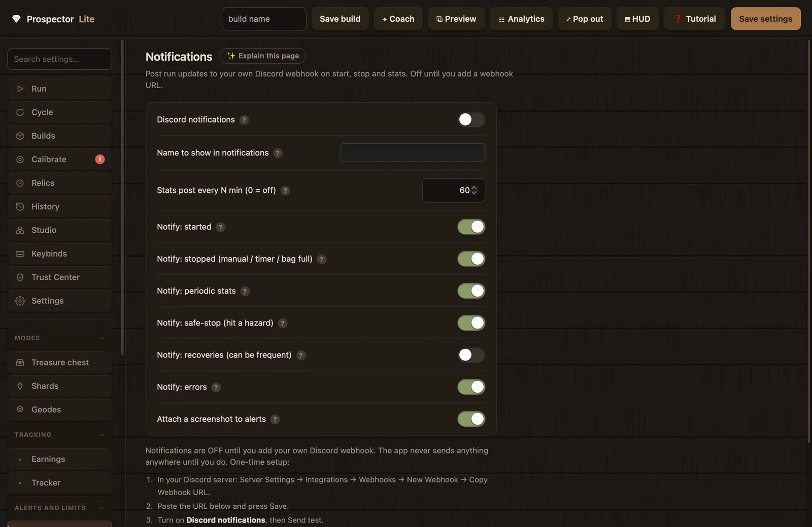
The Notifications page, with the webhook setup box at the bottom.
The webhook setup box
A setup box on this page walks through the one-time webhook connection. Its own copy states the posture plainly: "Notifications are OFF until you add your own Discord webhook. The app never sends anything anywhere until you do." The steps, as the box lists them:
In your Discord server: Server Settings → Integrations → Webhooks → New Webhook → Copy Webhook URL.
Paste the URL into the field and press Save.
Turn on Discord notifications, then press Send test.
Details worth knowing: the URL field is a password-style input, so the webhook cannot be read over your shoulder. Save checks that a non-empty URL starts with https:// on both the client and the server. Saving the field empty removes the webhook and turns notifications off completely. Send test refuses with "Turn on Discord notifications first." until the master toggle is on; on success it posts a test card and suggests re-copying the URL from Discord if nothing arrives. The URL is stored as the config key WEBHOOK_URL, is Shared-owned, and is cleared by a Reset Shared.
The box's privacy note, verbatim: "Sent only to the webhook you configure: the event, run stats, the name above and (if enabled) a screenshot. Never your IP, location or system details. Delete the URL to switch notifications off completely."
Discord notifications
WEBHOOK_ENABLED · toggledefault: off
The master switch for Discord notifications to your own webhook: start, stop, safe-stop, auto-stop, bag-full and periodic stats. With no webhook URL saved the app sends nothing anywhere.
Turn on for any run you plan to walk away from.
Leave off when you have no webhook, or you want a fully offline session.
The name shown in notification cards so shared channels know whose run it is. Any label you like; leave blank to omit it, and the card's User field shows "(not set)".
Set it when several people post runs into the same channel.
Leave blank when the webhook is yours alone.
Related:Discord notifications. Watch for: "test says sent but nothing arrives" usually means a stale webhook URL, not this field.
Stats post every N min (0 = off)
WEBHOOK_STATS_MIN · intdefault: 60 min
The stats pulse: how often to post a stats update while running. Sixty gives an hourly read on pans, rate and recoveries. At 0 the pulse is off but event alerts still send.
Raise it when you want fewer pings on very long runs.
Lower it when you want a closer watch on an experimental build.
The in-app help calls this one "The important one." It pings when the macro pauses on trouble and starts retrying, not after the run is dead. The message names the reason and the retry count.
Keep on for any AFK run; it is your early warning.
Turn off only when you are sitting at the machine anyway.
Attaches a screenshot to safe-stop, recovery, hard-stop and stats messages so you can see what the game looked like. Screenshots attach only when the event type allows it and this toggle is on.
Keep on when diagnosing stops remotely without walking to the computer.
The page hint reads "Automatically stop the macro after a set time," but this page carries more weight than that: it also holds the safe-stop policy, which decides what any run does at a hazard, classic cycle and Studio builds alike. The stop timers are hard ceilings; the safe-stop ladder is what happens when a run cannot proceed. The Starfall and Fortune River fast-travel recoveries under Advanced tuning slot into the same ladder rung, ahead of the safe stop itself.
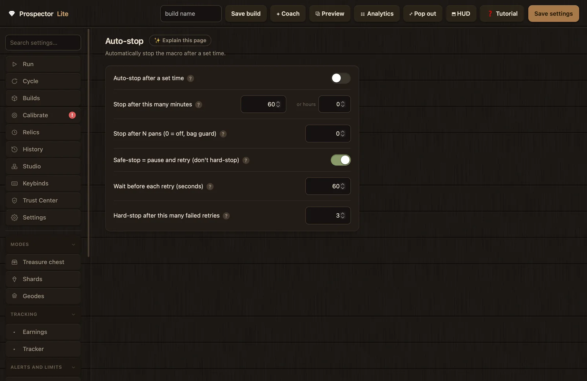
The Auto-stop page. Note the "or hours" field next to the minutes box.
Auto-stop after a set time
AUTOSTOP_ENABLED · toggledefault: off
Stops on a timer: the run ends after a set number of minutes. The clean cap for overnight sessions. The stop is logged and, with notifications on, sent as a stopped event.
Turn on when your inventory or buffs have a known lifespan.
Leave off when you stop runs by hand or by the pan guard instead.
The timer length: how many minutes to run before the auto-stop fires. Next to the minutes box the app injects a small "or hours" companion field (0.5-hour steps). The two are bound both ways: typing hours writes the rounded minutes back into the minutes box, and editing minutes recomputes the hours display. Only the minutes value is stored.
Raise it when you will be away longer or the bag lasts longer.
Lower it when you want a shorter guaranteed session.
The bag guard: stops after this many pans so the macro does not keep panning into a full inventory. Fires as a bag_full event, which the stopped notification covers.
Set it near the number of pans your backpack holds.
Keep 0 when inventory space is not the limiting factor.
Related:Notify: stopped. Watch for: hours of panning into a full bag is the failure this prevents. Coach range: 0 to 100000.
Safe-stop = pause and retry (don't hard-stop)
SAFE_STOP_RETRY · toggledefault: on
The final rung of the recovery ladder before giving up. When the run truly cannot proceed, it pauses and retries instead of stopping for good, so an AFK run heals itself. With notifications on you get a message at each pause.
Keep on for any overnight run; one transient snag should not end the session.
Turn off when you would rather a blocked run stop immediately and hold nothing.
The final line: how many failed retries in a row before the run hard-stops for real. The counter resets whenever a retry actually gets going, so occasional snags never accumulate toward a stop.
Raise it when you want more patience on a flaky spot.
The Advanced tuning page collects the experimental features. Its hint sets expectations: "Experimental auto-tuning and movement patterns. Off by default. Turn one on and test it." Four families share the page: smart timing (2 keys), the X pattern (3 keys), Fortune River recovery (16 keys) and Starfall River recovery (5 keys).
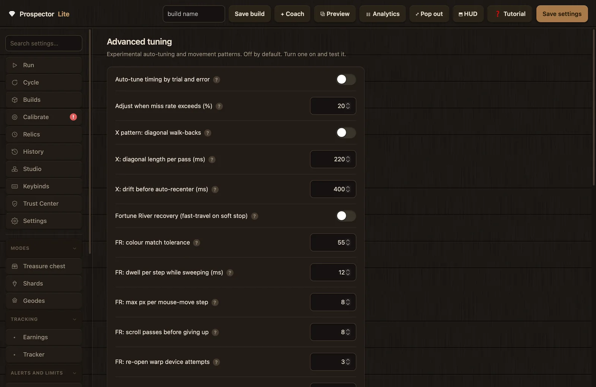
The Advanced tuning page. Twenty-six keys across four features.
Smart timing
2 settings
Auto-tune timing by trial and error
SMART_TIMING · toggledefault: off
When misses climb, it nudges a timing and keeps the change only if the miss rate drops; if the next window is worse, it reverses the change. Experimental: watch the log while it learns.
Turn on when you want the macro to chase a drifting timing on its own and you can supervise it.
Turn off when results wander; hand tuning with the Coach is steadier.
The X pattern enters the water on alternating 45 degree diagonals (S+A, then S+D on the next pass) so each pan covers new ground; the forward walk to land stays straight. Sideways drift is tracked, and once it exceeds the drift limit a corrective strafe re-centers before the next pass.
X pattern: diagonal walk-backs
X_PATTERN · toggledefault: off
Turns the diagonal walk-backs on.
Turn on when you keep falling short on a straight line, or you want to spread digs across the strip.
Leave off when a straight walk-back is landing fine.
How long the diagonal is held per pass before the walk finishes straight back. At 0 the walk is diagonal the whole way, which was the old behavior.
Raise it when you want to cover more new ground sideways.
Lower it when you want straighter, tighter passes with more consistent depth and landing.
Coach range: 0 to 800 ms.
X: drift before auto-recenter (ms)
X_RECENTER_MS · intdefault: 400 ms
The drift limit. Once sideways travel adds up to this much, a corrective strafe (capped at twice this value) moves back toward the middle before the next pass, so the pattern cannot wander off the dig strip. 0 means never recenter.
Raise it when re-centers happen more often than you like.
Lower it when you want to stay tighter to center.
Coach range: 0 to 1500 ms.
Fortune River recovery
16 settings
Fortune River recovery is a fast-travel escape for soft stops on that map. The flow: press 4 to equip the warp device, double-click to open Fast Travel, sweep the list column for the pink "Fortune River" row (a color match within the tolerance, per channel), click it, wait out the teleport, then walk W back into the water and on to the far-shore deposit cue, and resume the loop. It sits on the same recovery-ladder rung as Starfall recovery and the safe stop, and it is skipped on hard stops.
Setup lives in the Calibrate tab's "Fortune River recovery (optional, advanced)" section (row color, list edges, the Open Fast Travel point, screen center and the Auto Pan button states); see Calibration. Test the whole flow with the Soft-stop hotkey, Ctrl+J by default, which triggers a manual soft stop. The in-app help is direct about the audience: map-specific and advanced, off unless you know the map.
Fortune River recovery (fast-travel on soft stop)
FR_RECOVERY · toggledefault: off
The master switch for the fast-travel recovery described above.
Turn on when you farm Fortune River and want dead ends to heal themselves.
Leave off when you farm any other map, or the FR calibration rows are not set.
The dwell per sweep step while hunting the pink row down the list column.
Raise it when you want a steadier sweep that cannot blow past the row.
Lower it when you want a faster scan.
Coach range: 4 to 60 ms.
FR: max px per mouse-move step
FR_MOVE_STEP · intdefault: 8 px
The cursor step size during the list sweep. Smaller is smoother and less affected by mouse acceleration; larger scans faster.
Raise it when the sweep is too slow.
Lower it when the cursor skips past the row.
Coach range: 2 to 24 px.
FR: scroll passes before giving up
FR_FIND_TRIES · intdefault: 8
Full top-to-bottom sweeps, scrolling between each, before the recovery re-opens the warp device.
Raise it when the row is often just past where it stops looking.
Lower it when failed searches should give up and re-open sooner.
Coach range: 2 to 20.
FR: re-open warp device attempts
FR_OPEN_TRIES · intdefault: 3
If a full search finds nothing, the device probably never opened; this is how many times to re-equip slot 4 and retry.
Raise it when the device only opens some of the time on your machine.
Lower it when opening is reliable and failures should surface faster.
Coach range: 1 to 8.
FR: wheel notches per scroll
FR_SCROLL_STEPS · intdefault: 3
Wheel notches per scroll when the row is not visible in the list box.
Raise it when you want to cover the list faster.
Lower it when big jumps scroll the row past the view.
Coach range: 1 to 10.
FR: gap between the two clicks (double-click) (ms)
FR_DOUBLE_GAP_MS · intdefault: 120 ms
The double-click gap that opens Fast Travel after switching to hotkey 4.
Raise it when the game needs more time between the two clicks.
Lower it when the double-click is not registering as one.
Coach range: 40 to 400 ms.
FR: wait for menu to open (ms)
FR_OPEN_MS · intdefault: 600 ms
How long to wait for Fast Travel to appear after the double-tap before sweeping.
Raise it when the menu opens slowly and the sweep starts before the list exists.
Lower it when the menu is fast and the wait is wasted time.
Coach range: 200 to 2000 ms.
FR: pause around each click (ms)
FR_CLICK_SETTLE_MS · intdefault: 300 ms
The pause around each cursor move and click so the game registers them.
Raise it when recovery clicks are not landing.
Lower it when clicks land reliably and you want the recovery quicker.
Coach range: 80 to 900 ms.
FR: pause between each step (ms)
FR_ACTION_GAP_MS · intdefault: 500 ms
The step spacer: a pause between each stage of the recovery (keys, menu, clicks, returning).
Raise it when steps happen too fast for the game and get dropped.
Lower it when the game keeps up and the recovery should finish sooner.
Coach range: 150 to 1500 ms.
FR: wait after teleport to load (ms)
FR_WARP_MS · intdefault: 2500 ms
The load wait after clicking Fortune River, for the teleport and the world to finish loading.
Raise it when slow loading means it starts walking before the world exists.
Lower it when loading is quick and the wait pads the recovery.
Coach range: 800 to 6000 ms.
FR: tiny D strafe after return (ms)
FR_STRAFE_MS · intdefault: 10 ms
The line-up tap: a tiny D strafe after returning to the pan.
Raise it when you end up slightly off your dig spot after recoveries.
Lower it (or 0) when the return lands on the spot without help.
Coach range: 0 to 80 ms.
FR: max W walk to reach water (ms)
FR_WALK_MAX_MS · intdefault: 6000 ms
The walk cap back to the water after a warp, so the recovery cannot walk off into nowhere.
Raise it when your spot is genuinely far from the warp point.
Lower it when the water is close and a failed walk should be caught sooner.
Coach range: 2000 to 12000 ms.
FR: hold A on land before restart (ms)
FR_END_A_MS · intdefault: 300 ms
The final alignment: hold A this long once the land cue shows, then restart the loop. 0 skips it if your spot needs no line-up.
Raise it when the restart position sits right of where you dig.
Set 0 when no alignment is needed.
Coach range: 0 to 1200 ms.
FR: reads to confirm water-cross/arrival
FR_CROSS_CONFIRM · intdefault: 3
The commitment check: how many cue reads in a row are needed to count as truly in the water, then truly on the far shore. Starfall recovery uses the same value for its arrivals.
Raise it when the recovery restarts on the shore it spawned on instead of crossing.
Lower it when you want it to commit faster.
Coach range: 1 to 10.
Starfall River recovery
5 settings
Starfall recovery shares the Fast Travel calibration with Fortune River but matches Starfall's own row color. After the warp it holds A until the Pan cue while timing the strafe, backs off with D for a percentage of that measured time so it centers on the strip, then walks S to the Pan cue. Each arrival is confirmed by the same FR: reads to confirm count. When both recoveries are enabled, Starfall is checked first and wins.
Starfall River recovery (fast-travel on soft stop)
SR_RECOVERY · toggledefault: off
The master switch for the Starfall variant of the fast-travel recovery.
Turn on when you farm Starfall River spots.
Leave off when you do not know the map; the in-app help marks it advanced.
The Starfall row match tolerance, per color channel.
Raise it when recovery never finds the row.
Lower it when it clicks the wrong one.
Coach range: 10 to 120.
SR: max timed A strafe to water (ms)
SR_A_MAX_MS · intdefault: 6000 ms
The strafe cap. After the warp the recovery holds A until the Pan cue, measuring the time; past this cap it reports failure instead of strafing forever.
Raise it when the water is genuinely far from the warp point.
Lower it when a failed strafe should be caught sooner.
Coach range: 1000 to 15000 ms.
SR: D back-off (% of the A time)
SR_D_PCT · intdefault: 50
The centering move: after the timed A strafe finds water, hold D for this percent of that time to center on the strip. 50 means half the measured time.
Raise it when you end up off-center after recoveries.
Lower it when the back-off overshoots the strip.
Coach range: 10 to 90.
SR: max S walk to water (ms)
SR_S_MAX_MS · intdefault: 4000 ms
The walk-in cap for the final S walk to the Pan cue; past it the recovery reports failure instead of wandering.
Raise it when your spot needs a long walk into the water.
Lower it when the walk is short and failures should surface faster.
Coach range: 500 to 10000 ms.
Setup
The Setup group holds two small pages, Window and Relic behaviour, and this section also covers the pinned Relics tab those behavior keys act on.
Window
1 setting
The page hint: "Make calibration survive the Roblox window being moved." One toggle, and it is a Shared page, so it applies to any run.
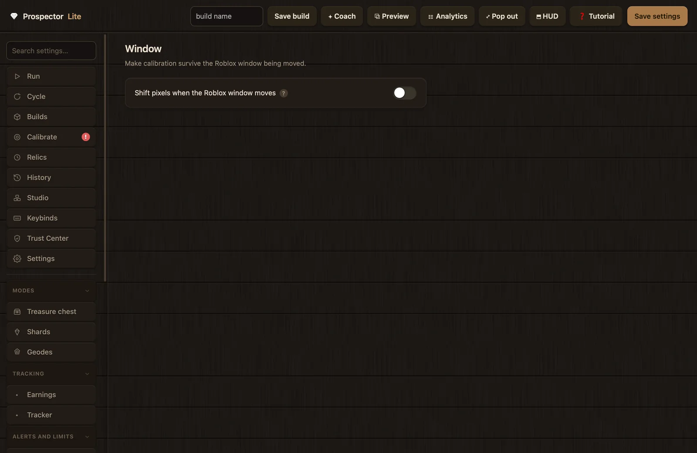
The Window page: one toggle.
Shift pixels when the Roblox window moves
WINDOW_RELATIVE · toggledefault: off
Calibration follows the window: if you move the Roblox window, calibrated pixels shift by how far the window has moved from the reference recorded at calibration time. Off means absolute screen coordinates. After turning it on, re-calibrate once so the reference gets set.
Turn on when you move the game window around between sessions.
Leave off when the window never moves; absolute coordinates have nothing to track.
Related:Calibration. Watch for: pixels reading wrong right after enabling; that is the missing reference until you re-calibrate once.
Relic behaviour
3 settings
The "Relic behaviour" page tunes how the relic timers place their items; the timers themselves live on the Relics tab below. These keys are Classic-owned.
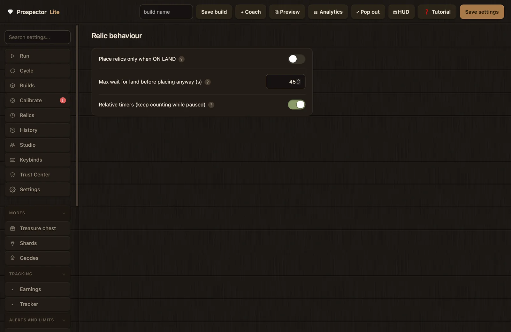
The "Relic behaviour" page.
Place relics only when ON LAND
RELIC_ON_LAND · toggledefault: off
A due relic waits for the Collect Deposit cue before placing, because placing from the water misplaces it. The loop touches land every few seconds, so the wait is short.
Turn on when relics keep landing in the water.
Leave off when placement position does not matter for your relics.
The safety valve for the on-land wait: if the land cue never shows for this long past due, the relic is placed anyway so the buff is not lost. The engine logs the forced placement.
Raise it when your relics are expensive and worth waiting longer for the right spot.
Lower it when a wasted placement matters less than a late buff.
Relic timers follow real time: pausing the macro does not pause them, which matches the in-game buff that keeps burning while you are paused. When off, the time spent paused is added onto pending timers at resume, and the shift is logged.
Keep on so cooldowns match the buffs through pauses.
Turn off when you want timers frozen with the pause and shifted on resume.
The pinned Relics tab holds the timers themselves. Its hint describes a firing: "Every N minutes the macro pauses, switches to the slot, double-clicks to use the item, switches back to slot 1 (pan), and resumes. Enable a row to use it."
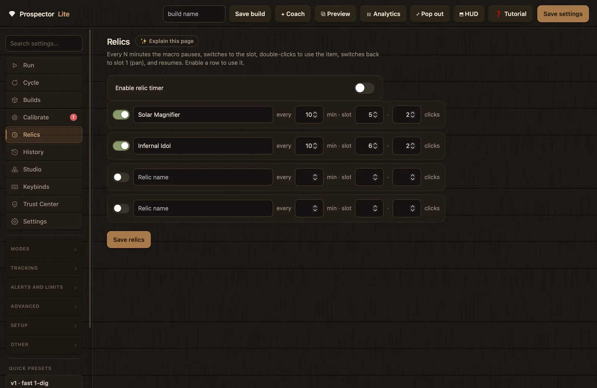
The Relics tab: a master switch and four timer rows.
Enable relic timer
RELICS_ENABLED · toggledefault: off
The master switch for the relic scheduler. Nothing fires while it is off, whatever the rows say. Each enabled relic first fires one full interval after start, then on its interval.
Turn on when you run buff items on a cooldown and want them re-placed automatically.
Leave off when you place buffs by hand; Ctrl+Shift+1 to 9 resets a single timer after a manual placement, and Ctrl+U resets all.
Only rows with the switch on and a non-zero slot are saved and scheduled.
Name
text, placeholder "Relic name"
Shown on the Run tab countdown chips and in notifications; falls back to "Relic".
every … min
number, minimum 1
The firing interval in minutes; falls back to 10 and is clamped to at least 1 on save.
slot
number, 0 to 9
The hotbar slot holding the item. Slot 0 disables the row in practice, since zero-slot rows are not collected.
clicks
number, minimum 1
How many use-clicks to send; falls back to 2.
When a timer fires, the engine releases all keys, settles for 120 ms, taps the slot key, waits 160 ms for the switch, sends the row's clicks as 20 ms taps with a 90 ms gap, then returns to slot 1, the pan, and resumes. Timers only fire between supervisor ticks, a safe boundary, so a firing cannot corrupt the cycle mid-action. Press Save relics to persist the rows; the toast confirms how many were saved. Two rows come seeded as examples: Solar Magnifier (every 10 min, slot 5, 2 clicks) and Infernal Idol (every 10 min, slot 6, 2 clicks).
Relic rows travel with builds: saving a build snapshots the rows and the master switch along with the settings, and loading one restores them. The Run tab shows live countdown chips per relic plus a "set timer" row that accepts times like "3m 4s", "3:04", or plain seconds.
Keybinds
The Keybinds tab rebinds the six global hotkeys. The page hint is the whole workflow: "Click a box, then press the key combo you want. They work globally while the macro is running. Stop & Start the macro to apply." Clicking a box arms it and shows "press keys…"; the next non-modifier keydown records the combo, displayed as Ctrl+Alt+Shift+Key as applicable.
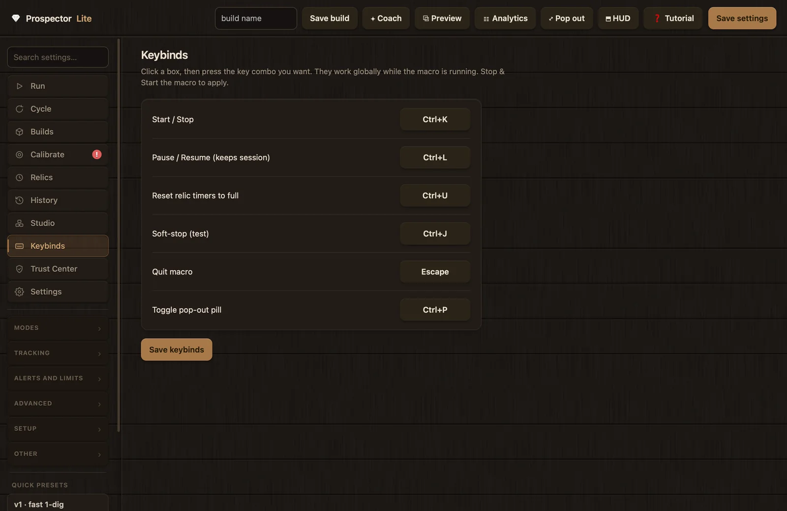
The Keybinds tab with the six defaults.
Config key
Row label
Default
What it triggers
HOTKEY_TOGGLE
"Start / Stop"
Ctrl+K
Flips the run on or off; toggling out of a pause resumes; stopping releases all held input.
HOTKEY_PAUSE
"Pause / Resume (keeps session)"
Ctrl+L
Pauses mid-cycle, keeping session stats, relic timers and earnings.
HOTKEY_RELIC_RESET
"Reset relic timers to full"
Ctrl+U
Resets all relic timers, for when you place items by hand.
HOTKEY_SOFTSTOP
"Soft-stop (test)"
Ctrl+J
Triggers the safe-stop path (pause and retry) on demand; also the way to test the fast-travel recoveries.
HOTKEY_QUIT
"Quit macro"
Esc
Stops the engine and releases held keys and mouse buttons.
HOTKEY_POPOUT
"Toggle pop-out pill"
Ctrl+P
Swaps between the pop-out pill and the main window.
Press Save keybinds to write the six combos to the config; the toast repeats the catch: "Keybinds saved, Stop & Start the macro to apply". The engine reads hotkeys once at start, so changes take effect the next time the macro starts, not mid-run. A Reset Shared restores all six defaults.
One fixed combo is not rebindable: Ctrl+Shift+1 through 9 resets that single relic's timer, matching the Ctrl+U reset-all above.
App settings
The app Settings page covers appearance and behavior of the app itself. Its hint draws the line: "App appearance and behaviour. Saved on this computer; these do not change your macro tuning or your builds." Five toggles sit at the top:
The app Settings page, with the ownership card below the toggles.
Toggle
Default
Stored
Effect
"Compact mode (mini sidebar, opens on hover)"
off
on this computer
Shrinks the window to 740 by 820 with a mini sidebar and hides the Preview panel; off returns to 1340 by 900.
"Wood texture background"
on
on this computer
Off switches to a plain background.
"Reduce animations"
off
on this computer
Trims motion; the boot splash, for example, takes a fade-free path.
"Skip the setup wizard automatically on launch"
off
config key SKIP_WIZARD_AUTOMATICALLY
Launches go straight to the app. The same preference is writable from the Welcome gate and the Trust Center; a failed save reverts the checkbox with an error toast.
"Open tutorial whenever Prospector Lite opens"
on
config key TUTORIAL_AUTO_OPEN
The main tutorial auto-opens on a fresh entry into the app; shared with the Welcome gate, Trust Center, and the checkbox in the tour footer.
Below the toggles the page carries a note worth memorizing: "Press Ctrl+Z to undo a setting change and Ctrl+Y to redo. Undo covers slider, box and preset changes." That includes loading a quick preset, so an accidental preset load is one keystroke to reverse.
Settings ownership and the three resets
The Settings ownership card explains why resets are split in three. Its own wording: "Every setting has one owner, so the two macro modes never trample each other." Classic owns the built-in cycle tuning: modes, dig/shake/walk timing, recovery, relics. Studio owns which build is active, the CLASSIC | STUDIO switch and editor flags, stored with the script library, never in the classic config. Shared is used by any run: calibration, game window, notifications, auto-stop, earnings tracking, keybinds and appearance.
Button
What it resets
What it never touches
"Reset Classic…"
The built-in cycle tuning back to shipped defaults: modes, dig/shake/walk timing, recovery and relics.
Saved builds, Studio scripts, calibration, history.
"Reset Studio…"
Which build is active, the CLASSIC | STUDIO mode and editor flags.
The scripts themselves are not deleted.
"Reset Shared…"
Notifications (including the webhook URL), auto-stop, window tracking, earnings tracking, keybinds (all six back to defaults) and appearance, including the three appearance preferences stored on this computer.
Calibration, unless the checkbox below is ticked.
The checkbox under the buttons reads "Reset Shared also clears calibration (you would have to calibrate again)". Leave it unticked unless you mean it: with it ticked, a Shared reset wipes the calibrated pixels and you start over on the Calibrate tab.
Each reset asks for confirmation first, reports how many keys changed, and reloads the app. The reset is surgical: defaults are restored key by key, so anything already at its default is untouched.
Quick presets
The sidebar's Quick presets strip holds four chips. A preset only touches the keys it lists; anything else keeps its current value. Presets change the on-screen values only: they persist when you press Save settings, or when you press Start, which saves as part of launching. A splash confirms the load, and Ctrl+Z undoes it.
Chip
Keys it sets
Use it when
"v1 · fast 1-dig"
PERFECT off, DIG_CLICK_MS 15, MAX_DIGS_TO_FILL 1
One dig fills the pan; the right start for most fast money builds.
"v2 · multi-dig"
PERFECT off, DIG_CLICK_MS 75, MAX_DIGS_TO_FILL 8
One dig clearly does not fill your pan; the timings wait for the bar between digs.
10% dig-speed geode gear; pair it with the Geode Farm builds on the Builds page.
"Reset defaults"
All 146 schema keys back to their defaults.
A build has drifted into a mess and you want a clean slate. Builds and calibration are untouched.
Before pressing "Reset defaults", save your current tuning as a Build; the reset does not touch builds, so one Load brings it all back. Builds are covered on Modes and builds.